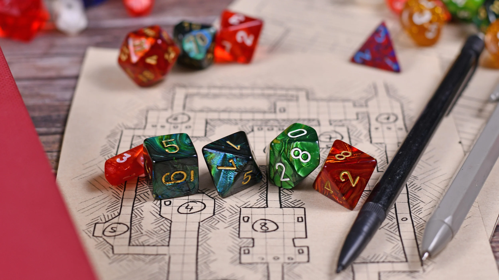

| Time/Day | Monday | Tuesday | Wednesday | Thursday | Friday |
| 8:00 - 10:00 | Wykład Modelowanie Obiektowe |
Ćwiczenia Modelowanie Obiektowe |
|||
| 10:00 - 12:00 | Ćwiczenia Wprowadzenie do Kognitywistyki |
Wykład Wprowadzenie do Kognitywistyki |
Ćwiczenia Programowanie dla WWW |
||
| 12:00 - 14:00 | Ćwiczenia Projekt Zespołowy 2 |
Wykład Wprowadzenie do Kognitywistyki |
Wykład Podstawy Sztucznej Inteligencji |
||
| 14:00 - 16:00 | Ćwiczenia Podstawy Sztucznej Inteligencji |
Autor jest studentem trzeciego roku kierunku Informatyka na Wydziale Matematyki i Informatyki Uniwersytety Jagiellońskiego.
Głównym zainteresowaniem autora są Papierowe Gry Fabularne, opierające się na narracji i odgrywaniu przez graczy ról fikcyjnych. Rozgrywka toczy się w fikcyjnym świecie, istniejącym tylko w wyobraźni grających.
Stosunkowo niedawnym hobby autora są figurkowe gry bitewne, szczególnie w krótszym formacie "Skirmish" np. Kill Team i WarCry.